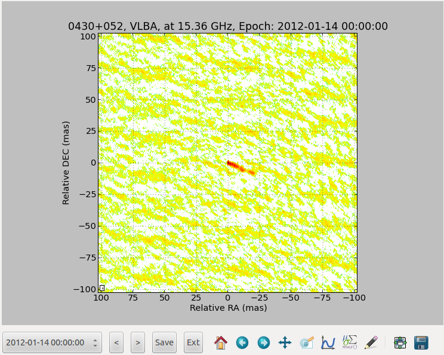

Walkthrough 3C120¶
In this walkthrough, I will show the basics of WISE analysis, by
investigating the kinematic in the 3C120 jet. The original notebook can be downloaded here.
Setup¶
We will analyse maps of the 3C120 jet observed with VLBA at 15 GHZ as part of the MOJAVE project. They can be obtained from http://www.physics.purdue.edu/MOJAVE/sourcepages/0430+052.shtml (FITS I image).
The first step is to import the required python library:
import os
import datetime
import numpy as np
import astropy.units as u
import wise
from wise import tasks
from libwise import imgutils, plotutils, nputils
%matplotlib qt4
Applying preset: display
We then initialize an AnalysisContext object that will handle the configurations and store the results:
ctx = wise.AnalysisContext()
Setting up the data configuration:¶
The project configuration is separated into a data, detection and matcher configuration retrospectively stored in ctx.config.data, ctx.config.finder and ctx.config.matcher. To list the default configuration, we simply execute:
print ctx.config.data.doc()
Documentation for:Data configuration
Option |Documentation |Default |
--------------------------------------------------------------------------
data_dir |Base data directory |None |
fits_extension |Extension index |0 |
ref_image_filename |Reference image filename |reference_image |
mask_filename |Mask filename |mask.fits |
bg_coords |Background region in coordinates |None |
|[Xa,Ya,Xb,Yb] | |
bg_use_ksigma_method |Use ksigma method to estimate the |False |
|background level | |
roi_coords |Region of interest in coordinates |None |
|[Xa,Ya,Xb,Yb] | |
core_offset_filename |Core offset filename |core.dat |
projection_unit |Unit used for the projection |mas |
projection_relative |Use relative projection |True |
projection_center |Method used to get the center |pix_ref |
object_distance |Object distance |None |
object_z |Object z |0 |
data_dir is the directory where the results will be store. Setting a configuration is as simple as assigning a new value to it:
BASE_DIR = os.path.expanduser("~/data/3c120/mojave")
ctx.config.data.data_dir = os.path.join(BASE_DIR, "run001")
ctx.config.data.object_z = 0.033
ctx.config.data.object_distance = 143 * u.Mpc
To select the files to analyse, we use the ctx.select_files() function. This function accept shell like wildcards, and it is possible to filter files by dates. For this walkthrough, we will only analyse images starting from January 2012:
ctx.select_files(os.path.join(BASE_DIR, "icn/*.icn.fits"), start_date=datetime.datetime(2012, 1, 1))
Number of files selected: 13
Now that we have selected our files, we want to preview them, in order to select the region that we will investigate. For that, we will execute a tasks called tasks.view_all(). A task is a small function that will execute a particular job. To list all currently available tasks, we can run:
tasks.list_tasks()
Name |Description |
------------------------------------------------------------------------------------------------------------
bootstrap_scc |Perform Stack Cross Correlation analysis n time and store results in output_dir |
build_final_dfc |Build a final separation file from a merge file |
create_poly_region |Create a region file |
detection_all |Run wds on all selected files |
info_files |Print List of selected files with information on beam and pixel scales |
info_files_delta |Print List of selected pair of files with information on velocity resolution |
list_saved_results |List all saved results |
list_tasks |Lists all WISE tasks |
load |Load result from files |
match_all |Run matching on all selected files |
plot_all_features |Plot all features distance from core with time |
plot_separation_from_core |Plot separation from core with time |
preview_detection_stack |Plot detection in stack |
save |Save current result to disk |
stack_cross_correlation |Perform a Stack Cross Correlation analysis |
view_all |Preview all images |
view_all_features |Plot all features location |
view_displacements |Plot individual match results at specified scale |
view_links |Plot all components trajectories on a map |
view_stack |Preview the stack image |
view_wds |Plot WDS decomposition |
The task tasks.info_files() will list some information about the currently selected files:
tasks.info_files(ctx)
File |Date |Shape |Pixel scale |Beam |
----------------------------------------------------------------------------------------------------------
0430+052.u.2012_01_14.icn.fits |2012-01-14 00:00:00 |2048x2048 |0.100 mas |0.595 mas, 1.255 mas, -0.07 |
0430+052.u.2012_03_04.icn.fits |2012-03-04 00:00:00 |2048x2048 |0.100 mas |0.699 mas, 1.444 mas, 0.20 |
0430+052.u.2012_04_29.icn.fits |2012-04-30 00:00:00 |2048x2048 |0.100 mas |0.576 mas, 1.325 mas, -0.15 |
0430+052.u.2012_05_24.icn.fits |2012-05-24 00:00:00 |2048x2048 |0.100 mas |0.528 mas, 1.188 mas, -0.02 |
0430+052.u.2012_07_12.icn.fits |2012-07-12 00:00:00 |2048x2048 |0.100 mas |0.503 mas, 1.415 mas, -0.24 |
0430+052.u.2012_08_03.icn.fits |2012-08-03 00:00:00 |2048x2048 |0.100 mas |0.521 mas, 1.262 mas, -0.11 |
0430+052.u.2012_09_02.icn.fits |2012-09-02 00:00:00 |2048x2048 |0.100 mas |0.533 mas, 1.257 mas, -0.07 |
0430+052.u.2012_11_02.icn.fits |2012-11-02 00:00:00 |2048x2048 |0.100 mas |0.516 mas, 1.224 mas, -0.13 |
0430+052.u.2012_11_28.icn.fits |2012-11-29 00:00:00 |2048x2048 |0.100 mas |0.524 mas, 1.350 mas, -0.14 |
0430+052.u.2012_12_23.icn.fits |2012-12-23 00:00:00 |2048x2048 |0.100 mas |0.679 mas, 1.523 mas, 0.11 |
0430+052.u.2013_01_21.icn.fits |2013-01-21 00:00:00 |2048x2048 |0.100 mas |0.522 mas, 1.186 mas, -0.11 |
0430+052.u.2013_02_10.icn.fits |2013-02-10 00:00:00 |2048x2048 |0.100 mas |0.503 mas, 1.139 mas, -0.13 |
0430+052.u.2013_02_28.icn.fits |2013-02-28 00:00:00 |2048x2048 |0.100 mas |0.546 mas, 1.209 mas, -0.06 |
Number of files: 13
Mean beam: Bmin: 0.557, Bmaj: 1.291, Angle:-0.07
while tasks.info_files_delta() gives information about the velocity resolution:
tasks.info_files_delta(ctx)
Date 1 |Date 2 |Delta (d) |Angular vel. res. (mas / yr) |Proper vel. res. (c) |
---------------------------------------------------------------------------------------------------------
2012-01-14 00:00:00 |2012-03-04 00:00:00 |50.0 |0.730499803077 |1.7063071511 |
2012-03-04 00:00:00 |2012-04-30 00:00:00 |57.0 |0.640789300944 |1.49676065886 |
2012-04-30 00:00:00 |2012-05-24 00:00:00 |24.0 |1.52187458974 |3.5548065648 |
2012-05-24 00:00:00 |2012-07-12 00:00:00 |49.0 |0.745407962323 |1.74112974602 |
2012-07-12 00:00:00 |2012-08-03 00:00:00 |22.0 |1.66022682517 |3.87797079796 |
2012-08-03 00:00:00 |2012-09-02 00:00:00 |30.0 |1.21749970665 |2.84384522331 |
2012-09-02 00:00:00 |2012-11-02 00:00:00 |61.0 |0.59877034753 |1.39861240491 |
2012-11-02 00:00:00 |2012-11-29 00:00:00 |27.0 |1.35277745183 |3.1598280259 |
2012-11-29 00:00:00 |2012-12-23 00:00:00 |24.0 |1.52187463331 |3.55480652913 |
2012-12-23 00:00:00 |2013-01-21 00:00:00 |29.0 |1.25948245515 |2.9419088517 |
2013-01-21 00:00:00 |2013-02-10 00:00:00 |20.0 |1.82624955997 |4.26576783496 |
2013-02-10 00:00:00 |2013-02-28 00:00:00 |18.0 |2.02916617774 |4.73974203885 |
Mean Delta time: 34.25 d +- 14.7880864212 d
Mean Velocity resolution: 1.25871823445 mas / yr +- 0.46420269991 mas / yr
Mean Velocity resolution: 2.94012381896 c +- 1.08428825211 c
And to view all currently selected images, we run:
tasks.view_all(ctx)
This will open a separate window in which you can walk through all the images.
{kind=link}
To define our region of interest, we need to set a pre_process function. We will do similarly to define also a background region in the image:
def pre_process(ctx, img):
img.crop([5, -15], [-25, 5], projection=ctx.get_projection(img))
def get_bg(ctx, img):
return img.data[:200, :200]
ctx.config.data.bg_fct = get_bg
ctx.config.data.pre_process_fct = pre_process
We can also define a mask. We will use for that a convenient task that set the mask as the brightest connected structure above a certain threshold of the stacked image:
tasks.set_mask_from_stack_img(ctx, nsigma=3)
tasks.view_all(ctx)
{kind=link}
Setting up the detection configuration:¶
Similarly to the data configuration, the detection configuration is stored in ctx.config.finder:
print ctx.config.finder.doc()
Documentation for:Finder configuration
Option |Documentation |Default |
------------------------------------------------------------------------
alpha_threashold |Significance threshold |3 |
alpha_detection |Detection threshold |4 |
min_scale |Minimum Wavelet scale |1 |
max_scale |Maximum Wavelet scale |4 |
use_iwd |Use Intermediate Wavelet Decomposition |False |
exclude_border_dist |Number of pixel from border to exclude |1 |
We will perform the analysis for scales 2 and 3, with intermediate scale wavelet decomposition:
ctx.config.finder.min_scale = 2
ctx.config.finder.max_scale = 4
ctx.config.finder.use_iwd = True
Running the detection task¶
Starting the detection is done with a task:
tasks.detection_all(ctx)
Start detection on: FitsImage(0430+052.u.2012_01_14.icn.fits)
Start detection on: FitsImage(0430+052.u.2012_03_04.icn.fits)
Start detection on: FitsImage(0430+052.u.2012_04_29.icn.fits)
Start detection on: FitsImage(0430+052.u.2012_05_24.icn.fits)
Start detection on: FitsImage(0430+052.u.2012_07_12.icn.fits)
Start detection on: FitsImage(0430+052.u.2012_08_03.icn.fits)
Start detection on: FitsImage(0430+052.u.2012_09_02.icn.fits)
Start detection on: FitsImage(0430+052.u.2012_11_02.icn.fits)
Start detection on: FitsImage(0430+052.u.2012_11_28.icn.fits)
Start detection on: FitsImage(0430+052.u.2012_12_23.icn.fits)
Start detection on: FitsImage(0430+052.u.2013_01_21.icn.fits)
Start detection on: FitsImage(0430+052.u.2013_02_10.icn.fits)
Start detection on: FitsImage(0430+052.u.2013_02_28.icn.fits)
Different tasks can be used to look at the results:
tasks.view_wds(ctx, scales=[4, 8])
{kind=link}
tasks.plot_all_features(ctx, scales=[4, 8], pa=True, feature_filter=wise.DfcFilter(0.1, 18, u.mas))
{kind=link}
Setting up the matching configuration:¶
The matching configuration is stored in ctx.config.matcher:
print ctx.config.matcher.doc()
Documentation for:Matcher configuration
Option |Documentation |Default |
--------------------------------------------------------------------------------------------------------------------
use_upper_info |Use Pyramidal scheme for matching |True |
upper_info_average_tol_factor |Tolerance factor that define the number |10 |
|of features for average upper delta | |
|calculation | |
mscsc2_upper_delta_bonus_range |Bonus for delta close to upper delta |0.4 |
mscsc2_nitems_bonus_range |Bonus for fewer merge |0.4 |
simple_merge |MSCI: use segment merging |True |
correlation_threshold |Correlation threshold |0.65 |
ignore_features_at_border |Ignore feature art border for matching |False |
features_at_border_k1 |At border param k1 |0.5 |
features_at_border_k2 |At border param k2 |0.25 |
features_at_border_k3 |At border param k3 |0.25 |
maximum_delta |Deprecated: use delta_range_filter |40 |
range_delta_x |Deprecated: use delta_range_filter |[-40, 40] |
range_delta_y |Deprecated: use delta_range_filter |[-40, 40] |
increase_tol_for_no_input_delta |Increase tolerance when no initial guess |True |
delta_range_filter |Delta range filter |None |
mscsc_max_merge |MSCSC: Maximum number of segment merged |3 |
tolerance_factor |Tolerance factor |1 |
method_klass |Matching method |<class 'wise.matcher.ScaleMatcherMSCC'> |
no_input_no_match_scales |List of scales at which no match is |[] |
|performed if no initial guess | |
min_scale_tolerance |Per scale tolerance factor |{2: 4, 3: 4, 4: 6} |
find_distance_mode |Method used for distance measure |min |
mscsc2_smooth |Apply smooth on merged features before |True |
|correlation | |
We will use the method ScaleMatcherMSCSC2 for the matching job. We also restrict the range of allowed displacement with a DeltaRangeFilter:
JET_ANGLE = -0.4 * u.rad
direction = np.array([-np.cos(JET_ANGLE), np.sin(JET_ANGLE)])
delta_filter = wise.DeltaRangeFilter([-1, 10], [-4, 4], unit=u.mas / u.year, x_dir=direction, pix_limit=4)
ctx.config.matcher.delta_range_filter = delta_filter
ctx.config.matcher.ignore_features_at_border = True
ctx.config.matcher.tolerance_factor = 1.5
ctx.config.matcher.method_klass = wise.ScaleMatcherMSCSC2
Running the matching task¶
Starting the matching is also done with a task:
tasks.match_all(ctx)
Several tasks are available to view the results.
We can look displacements from epoch to epoch individually at a specified scale. The scale parameter in all tasks is in pixel.
tasks.view_displacements(ctx, 8)
{kind=link}
{kind=link}
We can also view how the different components evolve as the travel away from the core:
tasks.plot_separation_from_core(ctx)
{kind=link}
{kind=link}
plot_separation_from_core() have several options. It is possible to additionally plot the position angle of the features, and filter them:
tasks.plot_separation_from_core(ctx, min_link_size=4, pa=True, feature_filter=wise.DfcFilter(0.1, 20, u.mas))
{kind=link}
{kind=link}
We can also fit a fct to the trajectory. The task then return a dictionary with all the fit result:
fit_result = tasks.plot_separation_from_core(ctx, scales=4, fit_fct=nputils.LinearFct, num=True,
min_link_size=4, feature_filter=wise.DfcFilter(0.1, 20, u.mas))
{kind=link}
for link, fit_fct in fit_result.items():
print "Fit result for link %s: %.2f +- %.2f mas / year" % (link.get_id(), fit_fct.a, fit_fct.ea)
Fit result for link 4:5: 1.74 +- 0.12 mas / year
Fit result for link 4:7: 2.50 +- 0.09 mas / year
Fit result for link 4:8: 2.99 +- 0.03 mas / year
Fit result for link 4:4: 2.21 +- 0.81 mas / year
Fit result for link 4:14: 0.56 +- 0.28 mas / year
Fit result for link 4:9: 2.64 +- 0.08 mas / year
Fit result for link 4:6: 2.40 +- 0.08 mas / year
To view the trajectories on a map, we can set first a reference image that will be used as background. We will use a stacked image of the all set using a convenient tasks for that:
tasks.set_stack_image_as_ref(ctx)
tasks.view_links(ctx, contour=True, levels=np.logspace(-3.5, 0.5, 20), map_cmap='gray')
{kind=link}
The result can be saved on disk using the save() task:
tasks.save(ctx, "walkthrough_test")
Saved MultiScaleImageSet @ /homes/fmertens/data/3c120/mojave/run001/walkthrough_test/walkthrough_test.ms.dat
Saved link builder @ /homes/fmertens/data/3c120/mojave/run001/walkthrough_test/walkthrough_test_4.ms.dfc.dat
Saved link builder @ /homes/fmertens/data/3c120/mojave/run001/walkthrough_test/walkthrough_test_6.ms.dfc.dat
Saved link builder @ /homes/fmertens/data/3c120/mojave/run001/walkthrough_test/walkthrough_test_8.ms.dfc.dat
Saved link builder @ /homes/fmertens/data/3c120/mojave/run001/walkthrough_test/walkthrough_test_12.ms.dfc.dat
Saved image set @ /homes/fmertens/data/3c120/mojave/run001/walkthrough_test/walkthrough_test.set.dat
And can later be loaded using the load() task:
tasks.load(ctx, "walkthrough_test")
Loaded image set from /homes/fmertens/data/3c120/mojave/run001/walkthrough_test/walkthrough_test.set.dat
Loaded MultiScaleImageSet from /homes/fmertens/data/3c120/mojave/run001/walkthrough_test/walkthrough_test.ms.dat
Loaded link builder from /homes/fmertens/data/3c120/mojave/run001/walkthrough_test/walkthrough_test_4.ms.dfc.dat
Loaded link builder from /homes/fmertens/data/3c120/mojave/run001/walkthrough_test/walkthrough_test_6.ms.dfc.dat
Loaded link builder from /homes/fmertens/data/3c120/mojave/run001/walkthrough_test/walkthrough_test_8.ms.dfc.dat
Loaded link builder from /homes/fmertens/data/3c120/mojave/run001/walkthrough_test/walkthrough_test_12.ms.dfc.dat
Going further from the basics¶
To explore further your results, the wise package provide different options:
- The full wise results can be obtained using either ctx.get_detection_result() or ctx.get_match_result() depending on your need. This later function return a MultiScaleMatchResultSet and a MultiScaleFeaturesLinkBuilder:
ms_result_set, ms_link_builder = ctx.get_match_result()
This is two different and compatible data structures that handle the result in a different way. The MultiScaleFeaturesLinkBuilder contains a set of FeaturesLinkBuilder object, one for each scale, and each of this objects contains a set of FeaturesLink object. The MultiScaleMatchResultSet contains a set of MultiScaleMatchResult one for each epoch, which contains a set of ScaleMatchResult object for each scales.
- The results can also be loaded into a pandas data structure (http://pandas.pydata.org/):
data = tasks.get_velocities_data(ctx, min_link_size=4, scales=4)
data is a spreadsheet like object with attributes as columns. The following attributes are provided:
print list(data.columns)
['angular_sep', 'angular_velocity', 'angular_velocity_error', 'angular_velocity_error_dec', 'angular_velocity_error_ra', 'dec', 'dec_error', 'delta_dec', 'delta_ra', 'delta_time', 'dfc', 'epoch', 'features', 'intensity', 'link_id', 'match', 'pa', 'proper_velocity', 'proper_velocity_error', 'proper_velocity_error_dec', 'proper_velocity_error_ra', 'ra', 'ra_error', 'scale', 'sep_pa', 'snr']
One can for example group the result by link_id and display the proper_velocity with distance from the core for each detected segments:
ax = plotutils.subplots()
for name, data_epoch in data.groupby('link_id'):
ax.errorbar(data_epoch.dfc, data_epoch.proper_velocity, yerr=data_epoch.proper_velocity_error, ls='', marker='o')
ax.set_ylim(0, 20)
ax.set_xlabel("Distance from core (mas)")
ax.set_ylabel("Apparent velocity (c)")
{kind=link}